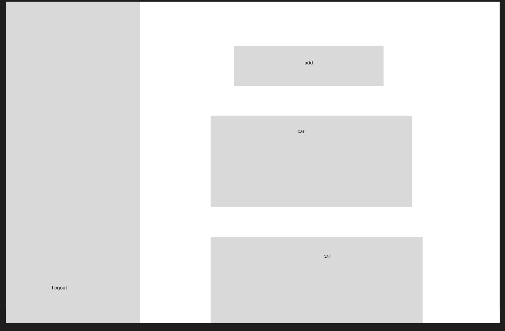

UX designer and researcher leading the app design from conception to delivery. Responsibilities included user research, wireframing, prototyping, mockup creation, and presentation creation.
Maintenance Tracker is a responsive web application that allows users to keep track of their cars, and what maintenance has been done on said cars. Maintenance can range from oil changes, to tire rotations, to windshield wiper replacements. The goal of Maintenance Tracker is to give users a single place to keep track of all car details, instead of hunting down receipts or invoices to determine the time or place of their last maintenance item.
Ideal users include busy people who own cars. Users can be people with one or more cars, as both options are supported. The more cars a person or family has, the harder it is to keep track of all items, but busy people with even one car can benefit from a place to keep track of their maintenance.
Maintenance Tracker was a responsive web design, so it was created for a larger screen first, then had its size reduced in order to support mobile-use. This was a unique challenge to a new designer, to think ahead on designing, while keeping the future engineering in mind for easier reponsive ability.
Research included competitive audits and persona creation to discover common user pain points.
Wireframes were created with a very simple user flow in mind, allowing users to easily create and delete both vehicles and maintenance items underneath the vehicles.
-A more detailed confirmation screen would decrease confusion
-Edit buttons should be consistent between vehicle and maintenance item actions
-Delete buttons should go inside edit screens
-A logo will need to be created and implemented
-Maintenance items should be shown in lists instead of cars
-Users didn't like the size of the edit buttons, so they would need to be changed for better accessibility
Maintenance Tracker will be engineered with round two of findings from usability studies in mind. The maintenance items will be shown in a spreadsheet format instead of cards. Search options will also be added, to find a maintenance item by name, date, or other notes.